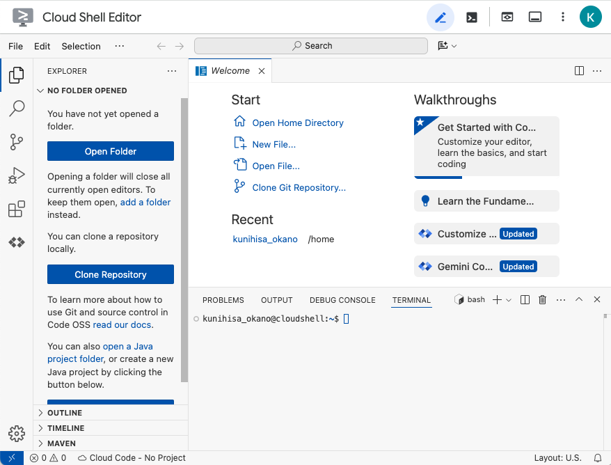
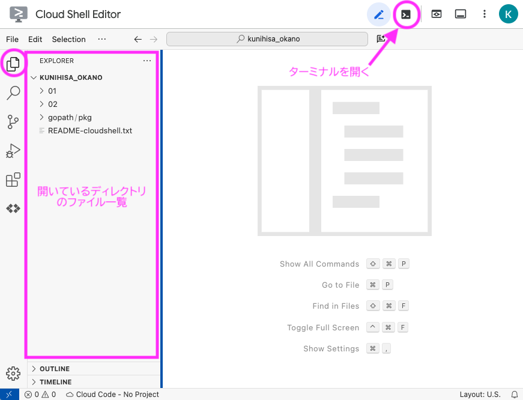
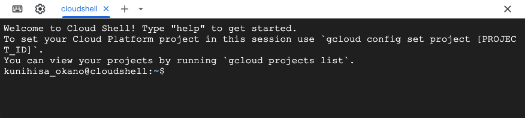
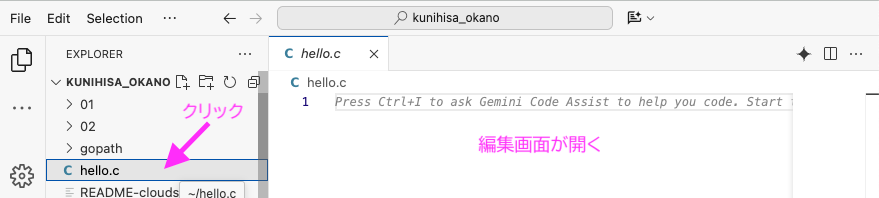
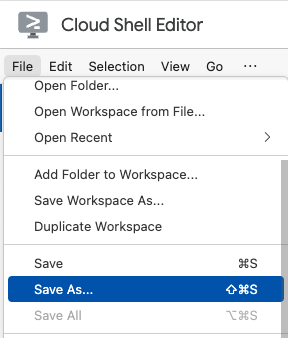
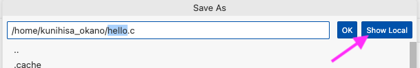

1 ガイダンス・環境構築
1.1 +R授業のコンテンツ
+R授業では，C言語プログラムの開発環境について，オンライン・オフラインそれぞれの環境設定方法を説明する．オンライン環境については，Google Cloud Shell Editorの使い方を本稿で述べる．オフライン環境については，毛利先生による解説動画を別途アップロードする．
本講義（プログラミング演習Bクラス）では，オンラインの開発環境としてGoogle Cloud Shell Editorを推奨する．Googleアカウントが必要となるので，アカウントを取得できない場合や，本講義でアカウントを使用したくない場合は，オフライン環境を使用すること．
1.2 Google Cloud Shell Editorについて
インターネットを経由してGoogle社が管理するサーバに接続すると，サーバ内で仮想マシンが起動する．Googleアカウントがあれば無料で使用できるが，いくつか使用上の制限がある:
- 1週間の使用時間が50時間以下に制限される
- 20分間キー入力がないと接続が切断され，再接続が必要となる（作成したファイルは残る）
- 120日間アクセスがない場合はホームフォルダの中身が自動的に削除される
- ストレージサイズは5 GB
仮想マシンのOSは，DebianベースのLinux OSとのこと1．
1.3 エディタを起動する
まずはエディタを起動してみよう：
- Google Cloud Shell Editor (https://ide.cloud.google.com/) にアクセスする
- Googleアカウントにログインしていない場合は，ダイアログに従ってログインする
- しばらく待つと仮想マシンが起動する
起動直後は下図のような画面である．右端にGeminiの広告パネルが表示されている場合は，✕ボタンで閉じてよい．

左上の File メニューからOpen Folderを選択して，ホームフォルダを開いてみよう．Open Folderという青いボタンからでもよい．ホームフォルダは，/home/自分のGoogleアカウント名である．
左側のペインに開いているフォルダ内のファイルが一覧で表示される．初期状態ではREADME-cloudshell.txtが存在しているはず

右上のペンマークのとなりのボタンを押すと，ターミナルウィンドウが表示される．

ターミナルとは，テキストコマンドでコンピュータの操作を行うためのアプリケーションである．（仮想）端末とも呼ばれる．Windowsでは古くはコマンドプロンプト，最近ではWindows Terminalがある．
プログラムのコンパイル，コンパイルしたプログラムの実行などをターミナルにコマンドを入力することで行う．
1.4 ターミナルを使ってみる
ターミナルにコマンドを打ち込んでコンピュータを操作する練習をしてみよう．
現在の作業フォルダを表示するコマンドpwdを$マークの右側に打ち込み，EnterEnterキーで実行する．
1行目の$の右側が入力したコマンド，2行目は実行結果を示している．kunihisa_okanoは筆者のGoogleアカウント名である． なお，$の左側は，ログイン名@マシン名:カレントフォルダ$を表す． 以後のコマンド例では$の右側のみを記述する．
ファイルの中身をテキストで表示するcatコマンドを使ってみよう．
ここで，表示したいファイル名README-cloudshell.txtをすべて手動で入力する必要はない．RRのあとにTabTabキーを押せば，作業フォルダ内でRから始まるファイル名を自動的に補完してくれる．
現在のフォルダに，テスト用のフォルダtest_dirを作成しよう．mkdirコマンド2で作成して，lsコマンドで作成結果を確認する：
#以降はコメントなので入力する必要はない．
作成したディレクトリtest_dirに作業ディレクトリを移動しよう．cdコマンドを使う．
フォルダ階層を相対パスで表すには，., ..を使う．
.現在のフォルダ..一つ上の階層~ホームフォルダ
たとえば，一つ上のフォルダに移動したい場合はつぎのようにする．
このほか，以下のコマンドはよく使う．
mvファイルを移動，名前の変更cpファイルをコピーrmファイルを削除
1.5 C言語ソースファイルの作成とコンパイル
test_dirにhello.cというC言語のソースファイルを作成してみよう．
ファイル一覧領域でhello.cを選択すると，エディタ領域でこのファイルを編集できる．

hello.cを編集して，標準出力にHellow worldというテキストを出力するプログラムを作成しよう．
作成したファイルをコンパイルするには，ターミナルでgccを呼び出す．
プログラム中にタイプミスなどがあると，コンパイラが警告やエラーを出力する．メッセージを読んで該当箇所を修正しよう．
コンパイルによって作成した実行ファイルは，自動的にa.outという名前がつけられる． これを実行してみよう．
行頭の./は，a.outという実行ファイルが現在のフォルダに存在することを示す．a.outはコマンドとしてコンピュータが認識していないので，どこのa.outなのか，実行するファイルの所在地を明示的に記述する必要がある．
実行ファイル名をa.out以外にするには，gcc hello.c -o helloのようにoオプションの後に実行ファイル名を記述する．実行するときは，./helloとする．
1.6 作成したファイルをローカルPCに保存する
作成したソースコードをローカルPCに保存するには，保存したいファイルを選択した状態でFileメニュー > Save As を選択して，

表示されるダイアログで，Show Localを選択する．

1.7 オフライン環境の構築方法
Windowsユーザーの場合は，別途アップロードする毛利先生による解説動画を参照する．
macOSユーザーの場合は，App StoreからXcodeをインストールする． Xcodeは容量が大きいので，ストレージ容量が気になる場合は，Command Line Toolsをインストールする．
エディタは好きなものを使えばよいが，Visual Studio Code を推奨する．